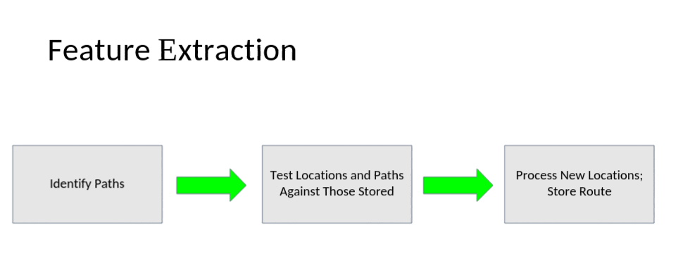
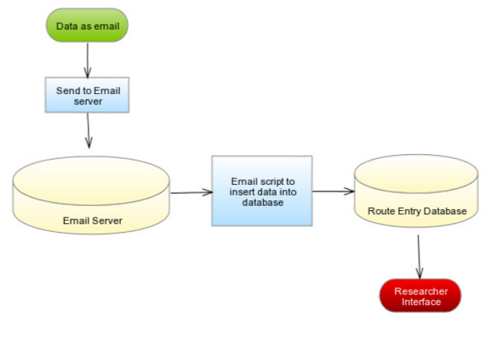
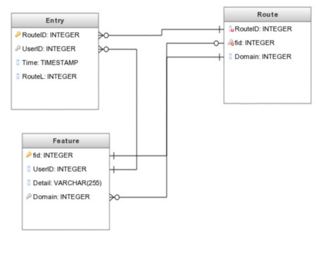
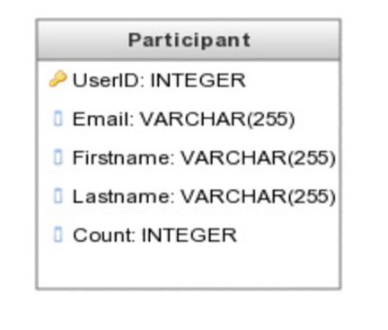

Solution Design
Overview
The goal of this project is to facilitate the collection of anonymized data for research purposes related to how individuals’ preferences change over time. For an expanded description of the project, consult the requirements document. The solution we have designed has three major components:
- A mobile application that semi-autonomously collects data
- A secure transmission protocol and data processing pipeline
- A database with web frontends for involved researchers
Environment
The project requires an Apple Iphone with iOS to run the client program. It also requires an active internet connection on this phone to connect to the server. The server needs Python installed to run the processing script, an SMTP email server running to receive the client data, an HTTP webserver to host the researcher interface site, and a MySQL database to manage the data. We will be testing the mobile application on the iPhone 6 with iOS 9.3, and using Python 3.5.
Modules and Data Flow

The system consists of three modules: an iOS application, a processing script, and a web server. The iOS app is responsible for live collection of data about the routes the user takes from home to work and from work to home. The processing script is responsible for taking the collected raw data, extracting useful information, and anonymizing the extracted data. The webserver is responsible for storing the anonymized data in a database, and presenting it to researchers.
iOS App
When the program launches, it will first complete all necessary initializations. If this is the first launch of the program, it will then display a settings menu, where the user must enter the location of their home and of their work, and expected arrival and departure windows. The program will then enter the default view, MasterView. Masterview contains a list of features of the route which are selectable, a button to redisplay the settings menu, and a button to send all stored route data. If any features of the route are selected, the screen will display DetailView, which contains all the information contained in that feature. In the DetailView, the user is able to edit attributes of the features.

When the program is put into the background, it waits until it receives an event message indicating that the user is expected to be leaving for their destination soon, and will start the GPS is the significant-change service mode. It will then record all GPS event messages in a feature until the time-out limit is reached or the GPS event contains the location of the destination. When time-out or destination is reached, the GPS is shut down. If the destination was reached, the NOAA web api is queried for current local weather data for the area spanned by the route. If there are any features which can not be identified, the user is asked to identify them. And the route is then stored internally in the phone until the route sending button is pressed. The phone then reenters the state of waiting for an event message indicating the user is expected to be leaving for their destination soon.

This chart presents the algorithmic function of the client application. In reality, it is an event-driven program. However, the algorithm is more easily visualized as being procedural.
When the route sending button is pressed, the program verifies that the data is complete and no additional user feature identification is needed. It then queries the public research HTTP server for the researcher’s PGP public key. The program will then encrypt the route data via PGP, with that key, and email the encrypted data to the server hosting the processing script. It then continuously queries the public research HTTP server for a list cryptographically hashed unique identifiers that indicate participation, it attempts to decrypt each list element using its private key, checking if the route data has been received and processed. Upon locating the confirmation of receipt, the raw route data is wiped from the phone.

Image taken from Introduction to Cryptography in the PGP 6.5.1 documentation. Copyright © 1990-1999 Network Associates, Inc. and its Affiliated Companies.
Data Processing Pipeline
The primary purpose of the data processing pipeline is to search for features like new paths or locations used or visited on the route, and to abstract the original GPS coordinates to the level of labelled features. The pipeline has the following steps:

The first step is partitioning the GPS coordinates into locations and paths. This is done with the following algorithm:
IsPath?
- Regress the GPS latitude vs. time
and longitude vs. time.
- Test whether correlation test statistic is significant.
IdentifyPaths
- With each point as a center
- Do a binary search over a symmetric range to maximize the number of points included such than the subsequence is not a route.
- Use a statistical test to determine whether end points (due to off-by-one error possibility due to symmetric collection of points) belong to the subsequence or not.
- Reconcile the identified subsequences to separate locations and paths.
[Runtime Estimation:] The above algorithm is estimated to run in O(n log_n m3) where n is the number of points in the sample and m is the maximum number of consecutive observations in a single location. However, it should be noted that the cost due to the regression test (here bounded by O(m3)) can be fixed below some constant by randomly sampling points, for example, from a set that is prohibitively large.
After the sequence of GPS points has been partitioned into (alternately) locations and paths, the identified locations and paths should be compared against known locations and paths. Locations are Stored as (Center, Radius). Paths are Stored as (Start Location, End Location, Average Latitude, Average Longitude, Length). These tuples are compared with a tolerance for comparison according to some ad-hoc rules.
Finally, the identified paths and locations are mapped to their corresponding labels in the route record database, and the appropriate entries are made.
Database
There are two databases with front-end access: a database storing abstracted route data, and a database storing a record of participation for the purpose of later being able to compensate the first n participants. The data is delivered in ecrypted format from the app to an SMTP server, and then follows this pipeline to get to the databases:

After the raw data is processed by the algorithm described in the section on the data processing pipeline, two records are generated: one that goes into the route record database, and one that goes into the participation log. The database structures are as below:


A python script scheduled to run periodically (several times a day) reads raw data from the emails delivered from the app and runs them through the analysis and storage in the database.
User Screens
Above is a mockup of the iOS interface for reviewing the list of tracked locations.
Use Cases
(There are not many use cases described here, since most of the app's work is done in the background.)
- A participant downloads the app, opens it, and is presented with a participation agreement. After agreeing to the conditions, they are prompted for contact information so they can receive their compensation (if they qualify by being one of the first n users). They are then taken to the main screen where they can signal the app that they are about to leave home or work, access the settings menu, or exit the app and let it run in the background. The user lets it run in the background.
- A researcher visits the researcher's page to view the summary data for the study. They are first prompted for their password. After logging in, the researcher examines how many participants there are and how many routes they have uploaded. The researcher examines a sample route, and then logs off.
Design Considerations
It was decided that the mobile application should be developed for iOS due to team members' previous experience with that platform. Collecting traffic data will probably not be a part of the finished product due jointly to the expense and difficulty to pull that information from existing sources and the number of readily available proxies, including average speed, time of day, and nunber of in-transit stops (e.g. at stoplights).
Sizing Estimates
| iOS app | The iOS app is estimated to total 1500 lines of code. |
| email processing script | The email processing script is estimated to be 500 lines of code. |
| researcher web interface | The researcher interface is estimated to be 500 lines of code. |
| feature extraction script | The feature extraction script is estimated to be 800 lines of code. |
| MySQL databases | Now that the data format has been decided, creating the database should be simple. Less than 100 lines of code. |